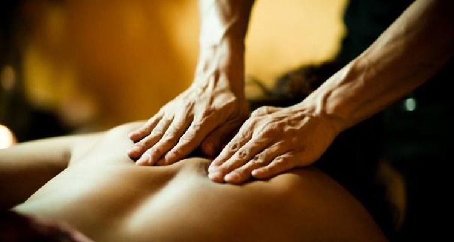

Mikel Professional Massage Therapeut
Co pro vás mohu udělat..
Ať už potřebujete někoho, kdo bude pracovat na konkrétních bolestech nebo bolestech, nebo chcete léčbu, která vám pomůže dobít a relaxovat, wellness masáž může být přizpůsobena vašim osobním požadavkům.
Můžu vám pomoci s jizvami nebo poškozením kůže. Během této léčby vyhodnotíme vaši jizvu a její okolí včetně dýchání, abychom zjistili, jak vás jizva ovlivňuje. Díky procesu hojení může být vaše tkáň jizvy v těle těsná, silná a přilepená na stěnu těla a dokonce i na její povrch někdy vaše orgány. To může vést k bolesti, omezenému pohybu a těsnému vzhledu, což se projevuje jako těsná kapela přes žaludek. Pracujeme na jizvě a okolí, abychom uvolnili adheze, což vede ke snížení těsnosti a znecitlivění oblasti. .